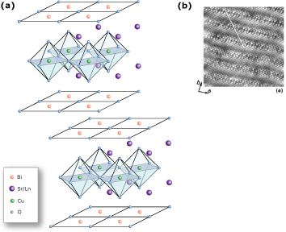

Bi2201 の電子構造における面外乱れの効果
銅酸化物高温超伝導体は、反強磁性絶縁体である母物質にキャリアをドープすることで高温超伝導を実現している。CuO2 面へのキャリアドープは、面外のブロック層において元素置換、もしくは酸素を加えることで行われる。そのため、ブロック層は必ず格子の歪みのような乱れを含むことになる。しかし、ブロック層が CuO2 面の外側であること、また、CuO2 面のホール濃度依存性が大きいことから、面外不規則性の影響は副次的な要素としてしか見られていなかった。面外不規則性の大きさと超伝導転移温度 Tc との関連性が報告され[1]、走査トンネル電子顕微鏡 (STM) 実験により観測される Bi2212 の電子状態の不均一性の原因として、面外不規則性が注目されることとなった[2]。このことから、銅酸化物高温超伝導体の高温超伝導メカニズムを解明する上で、面外不規則性が電子状態に及ぼす影響を明らかにする必要がある。
銅酸化物高温超伝導体はホール濃度依存性が強いため、面外不規則性を系統的に調べるためには、ホール濃度を一定にしたまま面外不規則性を制御する必要がある。Bi2Sr2-xLnxCuO6+δ (Ln-Bi2201) はこの研究に適しており、我々は Bi2201 を用いて角度分解光電子分光実験を行った。

(a) Bi2201 の結晶構造 (b) Bi2201 の BiO 面の STM 画像
(a) Bi2201 の結晶構造 (b) Bi2201 の BiO 面の STM 画像
参考文献
[1] K. Fujita et al., Phys. Rev. B 95 097006, (2005)
[2] K. McElory et al., Science 309, 1048 (2005)